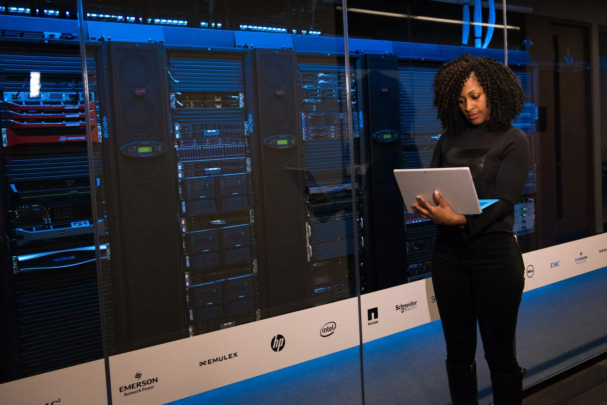

AWS Production Architecture: A Practical End-to-End Guide
How Route 53, CloudFront, AWS WAF, load balancing, private VPC design, EC2/ECS/EKS, RDS Multi-AZ, caching, storage, observability, security, backups, disaster recovery, and CI/CD fit together in a production-ready AWS workload.
By Dee Sanas··30 min read
Production architecture is the discipline of making a workload safe to change, operate, scale, and recover—not merely deploying it. Photo: Brett Sayles via Pexels.
01 · Design intent
From cloud deployment to production architecture
A workload that responds to one request has passed a functional test. A production workload must continue delivering an agreed outcome while infrastructure fails, traffic changes, credentials rotate, software is deployed, dependencies slow down, operators investigate an incident, and costs remain visible. “It runs” proves very little about those conditions.
Production architecture begins with the business service and its failure consequences. Identify users, critical journeys, data, upstream and downstream dependencies, availability and latency objectives, regulatory constraints, support coverage, recovery point objective (RPO), and recovery time objective (RTO). Then design controls that are proportionate to that context. A public information site, an internal reporting tool, and a regulated payment platform should not inherit the same architecture merely because all three run on AWS.
Blast radius is the portion of the service affected by a failure or bad change. Separate Availability Zones, accounts, environments, roles, deployment units, queues, and data partitions can all constrain it. The objective is not to assume every component will remain healthy. It is to stop one component, zone, identity, tenant, or deployment from becoming an unnecessary system-wide event.
Highly AvailableMaintain service through expected failures.
SecureProtect identities, traffic, workloads, and data.
ScalableMatch safe capacity to changing demand.
ObservableUnderstand behavior and act before impact grows.
Fault-TolerantContain faults and recover deliberately.
Use the Well-Architected pillars as a lens
The six AWS Well-Architected pillars—Operational Excellence, Security, Reliability, Performance Efficiency, Cost Optimization, and Sustainability—are useful review lenses rather than a shopping list. An architectural decision usually affects several pillars at once. Running a minimum capacity across two zones can improve reliability but increase cost. Dynamic scaling can improve efficiency, cost, and sustainability, but only if the workload is measurable and scale-in is safe. Managed services can reduce operational burden while creating new service limits, integration dependencies, and commercial considerations.
Document those trade-offs. Record the requirement, decision, alternatives, assumptions, owner, consequences, and review trigger. That decision history is often more valuable than a static diagram because it explains why the architecture is appropriate and when it must be reconsidered.
Availability, fault tolerance, and recoverability are not synonyms
Availability describes whether the service is usable when required. Fault tolerance describes whether it can continue through specific component failures with little or no interruption. Resilience is the broader ability to withstand and recover from disruption. Disaster recovery addresses restoration after an event serious enough that the primary deployed location or operating model cannot meet the business objective.
These properties apply to an end-to-end service, not an isolated resource. Two application instances do not create high availability if both run in one zone, depend on one NAT path, use a single-AZ database, or need a license server that has no recovery plan. A Multi-AZ database does not keep the service available if the only application deployment is unhealthy. A globally distributed edge does not recover a corrupted data set. Map every critical user journey to the components, identities, network paths, and data it needs, then evaluate common-mode failures across that complete chain.
Define the failure modes the design is expected to tolerate: process crash, instance loss, capacity impairment, zone outage, bad deployment, expired certificate, credential compromise, dependency throttling, data corruption, account compromise, or regional disruption. Each requires different controls. Redundant components help with component failure; change safety helps with bad releases; protected, versioned data and restore procedures help with corruption; an isolated recovery environment may help with account or regional events.
Operations is part of the architecture
Production readiness also includes ownership. Identify who watches the service, who can change it, who can declare an incident, who owns each dependency, and who can authorize recovery. Define support hours, escalation paths, maintenance windows, communication channels, and evidence retention. A technically redundant service can still experience a long outage if alarms reach nobody, access cannot be obtained, the runbook is stale, or the recovery decision has no accountable owner.
Prefer automation for frequent, deterministic actions, but keep it observable and bounded. Automatic target replacement and scaling are appropriate when health signals are trustworthy. Automatic regional failover can be dangerous when data state, dependencies, or the health signal are ambiguous. For each automation, define trigger, authority, guardrails, timeout, rollback, audit evidence, and human override.
02 · Request flow
Follow the end-to-end request path
A practical way to evaluate a production workload is to trace one request from the user to durable data and back. At each hop, ask how the destination is resolved, where TLS terminates, what is cached, which policy is enforced, how a target is declared healthy, what identity is used, which telemetry is emitted, and what happens if that hop is unavailable.
Amazon Route 53 first answers the client’s DNS query. After name resolution, the actual application path is users → Amazon CloudFront → Application Load Balancer → private application tier → private data tier. An AWS WAF web ACL can be associated with CloudFront or an ALB to inspect HTTP(S) requests, while AWS Shield contributes DDoS protection; neither is a separate proxy hop in the diagram. Supporting paths reach Amazon S3, Amazon ElastiCache, AWS Secrets Manager, observability services, and backup/recovery controls.
Request path
Resolve the name, protect the edge, route to private capacity
Figure 1. Route 53 resolves the name; the application request then crosses the protected edge and regional ingress before reaching private compute and data.
03 · DNS and edge
DNS, edge delivery, application protection, and ingress
Amazon Route 53: return the right DNS answer
Route 53 provides authoritative DNS through hosted zones and records. For AWS endpoints, alias records can map the zone apex or a subdomain to resources such as a CloudFront distribution or Elastic Load Balancing load balancer. Routing policies—including simple, weighted, latency, failover, geolocation, geoproximity, IP-based, and multivalue answer—control how Route 53 selects an answer when multiple records exist. Choose a policy only when it expresses an actual traffic-management or recovery requirement.
Health-aware routing can suppress an unhealthy endpoint or direct queries to a failover destination, but DNS behavior is influenced by resolver and client caching. It is not an instantaneous session migration mechanism. Health checking must represent the service outcome, not simply whether a port is open. Evaluate Target Health can be enabled for an alias to an Application Load Balancer, where Route 53 can evaluate the associated target-group health. It cannot be enabled for an alias pointing to a CloudFront distribution.
Amazon CloudFront: move delivery to the edge
CloudFront delivers content through a global edge network. A distribution can use Amazon S3, an ALB, or another HTTP endpoint as an origin. Cache behaviors map path patterns to origins and define allowed methods, cache keys, TTL boundaries, compression, cookie/query/header forwarding, and viewer protocol policy. Static images, JavaScript, stylesheets, downloads, and video segments are obvious cache candidates; selected dynamic responses can also benefit when their cache semantics are safe.
Useful caching reduces latency, origin requests, and compute/database load. Unsafe caching can disclose one user’s data to another or serve stale transactional state. Start from application response semantics: define which responses may be shared, which values make a response unique, and when content must be invalidated. Forwarding every header, query string, and cookie often destroys cache efficiency; forwarding too little can break correctness.
Terminate viewer TLS at the edge with the correct certificate and modern security policy. Then protect the origin so clients cannot simply bypass CloudFront. For S3 origins, use origin access control and block direct public access where the use case allows. For ALB origins, use appropriate origin authentication or network restrictions supported by the chosen pattern, a dedicated origin hostname, TLS to origin when required, and security-group controls. CloudFront is valuable for both performance and resilience, but it does not make a vulnerable origin safe by itself.
AWS WAF and AWS Shield solve different problems
AWS WAF evaluates HTTP(S) requests against a web ACL associated with resources such as CloudFront or an ALB. Rules can use managed rule groups, IP sets, rate-based statements, size constraints, geographic matches, labels, and inspections designed to mitigate patterns such as SQL injection and cross-site scripting. Bot Control and other managed capabilities may help address automated traffic. Begin in count mode where appropriate, inspect sampled requests and logs, tune exclusions, and deploy blocking rules deliberately; an untuned rule can deny legitimate customers just as effectively as an attacker.
WAF is application-layer filtering, not a complete DDoS strategy. AWS Shield Standard provides automatic network and transport-layer protections for supported AWS services at no additional charge. CloudFront and Route 53 are designed with DDoS resilience and can absorb or distribute traffic at the edge. Shield Advanced adds enhanced protections and response capabilities for qualifying risk profiles. Rate limits, caching, origin isolation, quotas, autoscaling, cost controls, incident playbooks, and application design still matter. No single “enable security” checkbox replaces layered resilience.
Application Load Balancer: decouple public ingress from private compute
An Application Load Balancer operates at Layer 7 for HTTP, HTTPS, gRPC, and WebSocket-aware use cases. Listeners receive traffic; prioritized rules can match host, path, headers, methods, query strings, or source IP and forward to target groups. Target groups can contain instances, IP addresses, or Lambda functions, depending on the design. This makes one ingress layer capable of routing to several services without exposing those services directly.
Health checks determine whether a target should receive normal traffic. A good endpoint tests the application’s ability to serve meaningful requests without turning every downstream transient fault into fleet-wide removal. Configure interval, timeout, thresholds, expected status codes, deregistration delay, and deployment health gates together. Understand fail-open behavior if every target becomes unhealthy, and alarm on healthy-host count before that condition occurs.
An internet-facing ALB is placed in public subnets across enabled Availability Zones, accepts traffic through a controlled security group, and forwards to private targets. It can terminate TLS using certificates from AWS Certificate Manager and, when required, establish HTTPS connections to targets. This separates the public entry point from the compute fleet and enables independent target registration, scaling, deployment, and health management.
04 · Network foundation
Design the VPC around failure domains and traffic intent
An Amazon VPC is a logically isolated network boundary in a Region. Its CIDR ranges, subnets, route tables, gateways, endpoints, network interfaces, security groups, and optional network ACLs determine how workload components communicate. CIDR planning must anticipate growth, multi-account connectivity, hybrid networks, acquisitions, disaster recovery, and overlap constraints. The illustrative 10.0.0.0/16 below is not a recommendation for every environment.
A subnet belongs to one Availability Zone. Spreading application and data resources across two or more zones reduces dependency on one zone and creates locations for load balancing and database failover. Multi-AZ does not automatically make an application highly available: instances must actually be distributed; shared dependencies must be resilient; data must be protected; capacity must survive a zone loss; and failure behavior must be exercised.
Network foundation
Two-zone VPC with separate inbound and workload-initiated outbound paths
Internet
Internet Gateway
Regional Application Load Balancerenabled across both public subnets
Compute implementation choice
EC2ECSEKS
Amazon VPC · 10.0.0.0/16CIDRs are illustrative
Availability Zone A
Public subnet · 10.0.1.0/24
ALB node A
NAT Gateway A
Private application subnet · 10.0.11.0/24
Application capacity A
Private DB subnet · 10.0.21.0/24
RDS primaryapplication endpoint
Availability Zone B
Public subnet · 10.0.2.0/24
ALB node B
NAT Gateway B
Private application subnet · 10.0.12.0/24
Application capacity B
Private DB subnet · 10.0.22.0/24
RDS standbyautomatic failover target
Inbound · ALB to healthy private targets
Outbound · workload → same-AZ NAT → Internet Gateway
Synchronous replication
Swipe to explore →
Figure 2. The regional ALB distributes inbound requests across private capacity; each workload uses its same-zone NAT Gateway for traditional zonal outbound access.
Public subnets are defined by routing
A subnet is public when its associated route table provides a path to an Internet Gateway. Merely placing a resource in a subnet does not make it public, and an IPv4 resource also needs a public address to communicate through the Internet Gateway. Conversely, calling a subnet “private” in a diagram does not make it private if its route table exposes an internet path.
The reference design places the internet-facing ALB and traditional zonal NAT Gateways in public subnets. The ALB requires public subnets in at least two Availability Zones for this pattern. The Internet Gateway attaches to the VPC; public subnet route tables send default internet traffic to it. Security groups restrict which inbound ports and sources the ALB accepts.
Private application subnets reduce direct exposure
Application instances, ECS tasks, or EKS worker capacity commonly run without public IP addresses. The ALB security group can reach the application security group only on the required target port. Administrative access should favor managed, audited mechanisms such as AWS Systems Manager Session Manager or controlled access patterns instead of routine inbound SSH.
Private workloads may still need outbound access for package repositories, container images, license services, APIs, telemetry, and operating-system updates. A traditional resilient pattern creates one zonal NAT Gateway per Availability Zone and routes each private subnet to the NAT Gateway in the same zone. Sharing one zonal NAT Gateway across zones can make outbound access depend on that NAT Gateway’s zone and can introduce cross-zone data transfer. AWS also now offers regional NAT Gateway mode, which automatically expands across zones and changes the subnet/routing model; evaluate its regional availability, behavior, quotas, cost, and private-connectivity requirements against the established zonal pattern.
VPC endpoints can reduce NAT dependency and keep supported AWS service traffic on private connectivity. Gateway endpoints cover Amazon S3 and DynamoDB. Interface endpoints, powered by AWS PrivateLink, expose private network interfaces for supported services such as ECR APIs, ECR Docker registry, CloudWatch Logs, Secrets Manager, and Systems Manager. Endpoints have hourly and data-processing costs and require DNS, security-group, endpoint-policy, and service-specific planning; they are not automatically cheaper in every traffic profile.
Private database subnets isolate the data tier
RDS and Aurora DB subnet groups should cover subnets in multiple Availability Zones. Database security groups accept only the required database port from the application’s security group or another explicit trusted source. Do not publish the database simply because doing so simplifies initial troubleshooting. Use private operational paths, controlled tooling, audited access, or purpose-built database proxies and administration hosts where justified.
ElastiCache nodes also belong in controlled subnets and should accept traffic only from intended applications. “Private” is not sufficient as a security statement: verify routes, public IP assignment behavior, security groups, network ACLs where used, DNS resolution, service endpoints, identity policies, encryption, and logging.
05 · Compute and elasticity
Choose one primary compute model, then scale the whole service
Amazon EC2, Amazon ECS, and Amazon EKS appear together in reference diagrams because they are common implementation choices—not because a production workload needs all three. Multiple models may be valid for a portfolio or a deliberate migration, but each adds image, patching, deployment, networking, security, telemetry, skills, and support considerations. Standardize where business and technical constraints permit.
Virtual machines
Amazon EC2
Best fit
OS access, specialized drivers or agents, legacy software, and licensing tied to hosts.
You operate
Guest OS, AMIs, patching, capacity, runtime configuration, and process supervision.
Primary trade-off
Maximum infrastructure control with the largest host-management responsibility.
AWS-native containers
Amazon ECS
Best fit
Teams that want managed container orchestration with direct AWS integrations.
You operate
Images, task and service configuration, IAM, networking, data, and application security.
Primary trade-off
Lower orchestration overhead, with deeper alignment to the AWS operating model.
Managed Kubernetes
Amazon EKS
Best fit
Kubernetes APIs, ecosystem tooling, platform extensions, or organizational standards.
You operate
Add-ons, workload identity, policies, upgrades, observability, and worker capacity choices.
Primary trade-off
Broad flexibility and ecosystem reach with meaningful platform complexity.
Whichever model you choose, use workload roles rather than long-lived credentials. Make application processes replaceable; keep durable state in purpose-built data services; externalize sessions when required; implement graceful shutdown; and expose readiness/liveness or ALB health behavior that reflects whether the process can serve traffic. Statelessness is not the absence of state—it is the removal of unique durable state from an individual compute unit so capacity can be replaced safely.
Auto Scaling: right capacity at the right time
Elasticity changes capacity in response to demand or a schedule. For EC2, an Auto Scaling group maintains minimum, desired, and maximum capacity, replaces unhealthy instances, and distributes them across selected zones. ECS services can scale tasks; Kubernetes uses its own workload and node scaling mechanisms. Scaling is an operating policy, not merely a checkbox.
Elasticity
Scale out on sustained demand; scale in with safeguards
Normal demand2 instanceshealthy baseline
scale out
High demand4 instancessustained signal crosses policy target
CPU utilizationtarget tracking or step policyMemory utilizationagent or workload telemetryRequest countfor example, ALB per targetWorkload metricqueue depth, latency, or work rate
Figure 3. Instance counts are illustrative; the scaling policy must account for warm-up, downstream limits, and safe removal.
Target tracking maintains a metric near a defined utilization or throughput target, much like a thermostat. CPU utilization and ALB request count per target can be useful when they correlate with work. Memory requires the CloudWatch Agent or other workload/OS telemetry for EC2 rather than being assumed as a default metric. Queue depth, concurrent sessions, processing latency, or business work rate may be better custom signals for asynchronous systems.
Step scaling provides explicit capacity adjustments for different alarm magnitudes. Scheduled or predictive approaches may help with known patterns. Configure default instance warm-up so new capacity is not treated as fully effective before it can serve. Account for container pull time, JVM warm-up, cache priming, registration, connection draining, long-running jobs, termination protection, and cooldown behavior.
Scaling compute does not guarantee scaling the service. Database connections, write throughput, cache memory, NAT ports, ECR pulls, downstream API quotas, queue consumers, third-party rate limits, and deployment speed can become bottlenecks. Load test the entire request path, set quotas before an event, pre-scale when lead time exceeds demand growth, and protect dependencies with timeouts, retries with jitter, circuit breaking, load shedding, and backpressure.
Performance, cost, and sustainability should share the same evidence
Capacity decisions should begin with a demand model: request rate, concurrency, payload, read/write mix, growth, seasonality, batch windows, and acceptable latency. Measure resource saturation and user-visible performance together. High CPU can be efficient if latency and error rates remain healthy; low CPU can hide lock contention, memory pressure, network waits, database bottlenecks, or a blocked worker pool. Benchmark representative workloads and revisit the model after material code, data, or traffic changes.
Cost visibility should follow the service boundary. Allocate compute, data transfer, NAT processing, load balancing, database, cache, observability, backup, security tooling, and support costs. Watch unit economics such as cost per request, transaction, tenant, or gigabyte—not only the monthly account total. A design with more managed services may cost more per resource while reducing engineering effort and incident risk; a lower infrastructure bill can be a poor trade if it creates a platform the team cannot operate safely.
Efficiency also supports sustainability. Scale capacity to demand, remove idle resources, use appropriate instance families and managed services, tune storage retention, increase cache efficiency without compromising correctness, and reduce unnecessary data movement. Do not reduce required reliability or evidence retention simply to report lower usage. The objective is to meet business and risk requirements with the least wasteful architecture, then improve it continuously using measured behavior.
Design availability, read scale, caching, and durability separately
Amazon RDS and the common Multi-AZ DB instance pattern
Amazon RDS manages many operational responsibilities for supported relational engines, including provisioning, storage, backups, maintenance operations, monitoring integrations, and replacement workflows. Managed does not mean unowned: the customer still selects the engine and version, instance class, storage, network, authentication, parameter settings, encryption, backup retention, maintenance timing, capacity, SQL design, indexes, connection behavior, and recovery plan.
In a common Multi-AZ DB instance deployment, RDS provisions a synchronous standby replica in a different Availability Zone. If the primary instance or its zone becomes unavailable, RDS can fail over to the standby and preserve the database endpoint. The design improves availability during certain failures and planned maintenance and provides data redundancy.
The standby is not a read-scaling target. It does not serve read traffic. Use read replicas when supported and appropriate, a Multi-AZ DB cluster with readable replicas, or an engine architecture designed for the read requirement. RDS Multi-AZ DB clusters are a distinct topology: a writer and two readable instances in three Availability Zones with semisynchronous replication. Model the different cost, latency, engine support, failover, endpoints, and operational behavior rather than using “Multi-AZ” as one generic feature.
Amazon Aurora is a separate architecture choice
Aurora is compatible with selected MySQL and PostgreSQL versions but uses a distributed storage architecture and cluster endpoints with writer and reader instances. It can provide different availability, failover, replica, storage, and scaling characteristics from standard RDS engines. Evaluate compatibility, extension support, connection behavior, write patterns, replica lag, global requirements, serverless or provisioned capacity, operational maturity, and cost. Do not assume Aurora is automatically the correct choice simply because it is AWS-built.
Amazon ElastiCache: performance with explicit failure semantics
ElastiCache supports cache engines including Valkey, Memcached, and Redis OSS-compatible options. A common cache-aside flow asks the cache for a key; a hit returns the value, while a miss reads the durable database and populates the cache with a time to live (TTL). This can reduce repeated reads and database load, improve latency, and store session state when designed appropriately.
Data path
Cache-aside performance with a separate Multi-AZ availability boundary
Figure 4. Cache-aside behavior improves eligible reads; the RDS standby protects availability and is not an application read target.
Caching introduces staleness, invalidation, eviction, hot keys, connection limits, serialization compatibility, stampedes, and cold-start behavior. Choose TTLs based on business tolerance for stale data, not convenience. Use request coalescing, jittered expiry, or prewarming where synchronized misses would overload the database. Decide whether a cache failure causes a controlled fallback, degraded capability, or service interruption, and test that decision at production-like scale.
Important data should not exist only in a cache unless losing it is explicitly acceptable. For session state, determine whether sessions can be recreated, whether multi-AZ cache replication is required, what happens during failover, and whether token-based stateless approaches better fit the application. Monitor hit ratio, evictions, memory pressure, replication lag, connection count, command latency, and backend load.
07 · Storage, secrets, and resilience
Protect objects, credentials, backups, and recovery paths
Amazon S3: durable object storage with an access model
Amazon S3 is a natural home for images, videos, application artifacts, documents, exported logs, and some backup data. It is object storage rather than a mounted general-purpose file system or relational database. Organize buckets and prefixes around ownership, lifecycle, access patterns, data classification, retention, replication, and blast radius—not only application names.
Enable versioning when recovery from overwrite or deletion justifies it. Use lifecycle rules to transition or expire current and noncurrent versions according to legal and business retention. Apply Block Public Access as a strong default, scope bucket and identity policies, encrypt objects with the appropriate server-side encryption option and AWS KMS key policy where required, and log or audit access based on risk. Object Lock can support write-once-read-many requirements when configured correctly, but retention settings require careful governance.
When S3 is a CloudFront origin, origin access control can keep the bucket private while allowing the distribution to retrieve content. Cache headers and invalidation practices determine delivery behavior. For logs and backups, isolate writers from readers/deleters, protect retention, consider a separate security or log-archive account, and plan the query and restoration workflow—not just ingestion.
AWS Secrets Manager: retrieve at runtime
Secrets Manager stores, retrieves, and rotates database credentials, API secrets, OAuth tokens, and similar secret material. The application uses its IAM role to call the service and retrieve only the required secret. Where supported, managed rotation or Lambda-based rotation updates both the secret and target system. Rotation must be tested with connection pools, cached credentials, overlapping versions, replicas, and failure recovery.
Do not hard-code credentials in source code, commit environment files containing secrets, bake them into container images or AMIs, or place them in deployment scripts. If a secret has already been committed, removing the file from the latest revision is insufficient: revoke or rotate the credential and address repository history and downstream copies. Avoid logging secret values and constrain who can read values separately from who can administer secret metadata and rotation.
Storage and resilience
Three separate operating concerns: objects, runtime secrets, and recoverable data
A
Object storage
Amazon S3
Amazon S3controlled object storage
ImagesVideosLogsBackupsDocumentsArtifacts
B
Runtime retrieval
AWS Secrets Manager
Applicationworkload identity
GetSecretValue
Secrets Managercontrolled secret value
runtime value
Secret retrievednot stored in source
IAM authorizationApplication authenticated using an IAM role.
AWS KMSEncryption at rest and key protection—not a network hop.
Figure 5. S3 stores governed objects; IAM authorizes runtime secret retrieval; AWS Backup recovery points must be restorable against defined RPO, RTO, and failback objectives.
Backups: define protection, retention, and restore evidence
RDS automated backups combine snapshots and transaction logs to support point-in-time recovery within the configured retention period. Manual snapshots persist until deleted and are useful for controlled milestones, migrations, and longer retention. AWS Backup can centralize policies, schedules, vaults, monitoring, cross-account or cross-Region copies for supported resources, Vault Lock, and automated restore testing.
Set backup frequency and retention from RPO, legal requirements, corruption detection time, and operational need. Encrypt recovery points and control the KMS policies needed to restore them. Cross-account copies can reduce the risk that one compromised production account can destroy every copy; cross-Region copies can support regional recovery objectives. Validate service and Region feature support, data sovereignty, transfer/storage cost, key availability, and restore permissions.
Disaster recovery: choose a strategy from RPO and RTO
Backup and restore maintains protected recovery points and deployable infrastructure definitions, then reconstructs the service after a disaster. It is usually the lowest-cost and slowest recovery option. Pilot light keeps core data and foundational components active in a recovery Region while most application capacity is deployed or started during recovery. Warm standby runs a scaled-down functional copy that is expanded and receives traffic after failover. Multi-site active/active serves traffic from multiple sites and demands the most sophisticated data consistency, routing, deployment, testing, and operational model.
RPO is the maximum acceptable data-loss interval; RTO is the maximum acceptable restoration time. Both come from business impact, not the service catalogue. A multi-AZ regional workload handles many infrastructure failures but is not automatically a multi-Region DR capability. Define disaster declarations, authority, detection, failover and failback, dependency readiness, data reconciliation, customer communication, security access, and evidence from exercises. Test under realistic assumptions—including partial control-plane impairment and unavailable personnel.
08 · Operations and governance
Observe service outcomes, audit change, and route actionable alerts
Production telemetry must explain whether users are successful, where time is spent, how close resources are to limits, and what changed. Collect metrics, logs, traces, events, and deployment markers with common dimensions such as service, environment, version, Region, Availability Zone, route, and tenant where appropriate. Protect sensitive data and control retention; telemetry is operational data with security and cost implications.
Amazon CloudWatch provides metrics, logs, alarms, dashboards, and related observability capabilities. EC2 publishes infrastructure metrics such as CPU utilization, network, disk-operation, and status-check data. Guest memory and many operating-system metrics are not default EC2 metrics; collect them with the CloudWatch Agent or another telemetry path. Application logs should be structured, correlated, timestamped consistently, and designed to support investigation without exposing credentials or personal data.
Monitor ALB request count, target response time, HTTP status codes, rejected connections where relevant, and healthy hosts. Monitor RDS connections, CPU, memory indicators exposed by the service, free storage, I/O, latency, replica lag where applicable, and engine-level performance. Build dashboards around customer journeys and service-level indicators, not only component utilization.

Operational readiness depends on people, access, telemetry, procedures, and practiced decisions—not dashboards alone. Photo: Christina Morillo via Pexels.
Operations and governance
Observe outcomes, route actionable signals, and retain evidence
01
Observe and notify
From telemetry to an owned response
Telemetrymetrics · logs · traces · eventsAmazon CloudWatchdashboards and signalsAlarmactionable thresholdSNS / integrationfan-out and routing layerExample destinationsEmailSlackPagerDuty
The integration path depends on supported subscriptions, HTTPS endpoints, chat integrations, event routing, Lambda, or an incident-management platform.
02
Audit and governance
Separate activity evidence from configuration state
Activity evidence
AWS CloudTrail
API and account activityWho did what, where, and when.
State evidence
AWS Config
Configuration, compliance, and driftHow supported resources changed over time.
Figure 6. Alert delivery and governance evidence are related operating capabilities, not one long service chain.
Alarms and Amazon SNS: notify with ownership and context
CloudWatch alarms can publish to Amazon SNS topics, which fan out to supported subscriptions or integration mechanisms. Email can suit lower-urgency notifications. Slack and PagerDuty integrations may use AWS Chatbot/Amazon Q Developer in chat applications, HTTPS endpoints, EventBridge, Lambda, vendor integrations, or an incident-management platform depending on current capabilities and organizational standards. Do not depict a vendor logo as if it were an AWS service or assume every integration is a direct SNS subscription.
An alert must have an owner, severity, actionable symptom, threshold rationale, runbook, relevant dashboard and logs, and escalation path. Page on customer impact or a condition that requires immediate human action; create tickets or aggregate signals that can wait. Review false positives, missed incidents, and time to detect. Monitoring should detect failure quickly enough for teams or automation to act.
AWS CloudTrail: management-event audit evidence
CloudTrail records AWS account activity, including management events that provide visibility into control-plane operations. During an investigation it can help determine which identity terminated an instance, changed a security-group rule, modified an IAM role or policy, created a subnet, or changed logging configuration. Event history is useful for recent management events, while trails or event data stores support longer-term and centralized requirements.
Centralize records into a protected security or log archive where appropriate, encrypt and retain them according to investigation and regulatory needs, validate delivery, monitor high-risk events, and restrict deletion. CloudTrail does not automatically explain business intent or prove that a configuration is safe; it records activity for analysis and detection.
AWS Config: configuration history and compliance evaluation
AWS Config records supported resource configuration items and relationships over time and can evaluate them against managed or custom rules. This answers questions such as how a security group was configured at a point in time, which resource relationships changed, or which resources violate a required setting. Use aggregators and conformance packs where multi-account governance requires a consolidated view.
CloudTrail and Config overlap in investigations but serve different purposes: CloudTrail centers on API and account activity; Config centers on resource state, relationships, history, and compliance evaluation. Neither replaces preventive controls such as service control policies, permission boundaries, infrastructure-as-code review, or deployment policy. Use evidence from all of them to understand and govern change.
Security is a system property. Edge filtering cannot compensate for unrestricted IAM. Private subnets cannot compensate for an application that accepts untrusted input unsafely. Encryption cannot compensate for a role that can decrypt every object. Layered security combines preventive, detective, responsive, and recovery controls so one weakness does not become a complete compromise.
Defense in depth
Layer controls across exposure, traffic, workloads, and data
ALB · TLS · security groupsintended routes and trusted sources04
Workload protection
Private app tierroles, patching, scanning, least privilege05
Data protection
Private data tierrestricted access, encryption, backup
Figure 7. These are reinforcing control layers, not a literal sequence of network proxies.
Apply these controls
AWS IAM least privilege: use roles, short-lived credentials, explicit resource scope, and periodic access review.
Security groups: reference trusted security groups where practical and expose only required ports.
Private subnets: keep routine application and database ingress off the public internet.
AWS WAF: filter web-layer threats with logged, tuned rules.
AWS Secrets Manager: retrieve secrets at runtime and rotate where supported.
Encryption: use TLS in transit and appropriate encryption at rest, with governed AWS KMS keys.
AWS CloudTrail: retain management-event audit evidence and detect high-risk actions.
AWS Config: record relevant configuration and evaluate required controls.
Avoid these anti-patterns
0.0.0.0/0 SSH: use managed, audited administration rather than open inbound access.
Public databases: place the data tier in private subnets and allow only intended application paths.
Hard-coded passwords: revoke exposed values and retrieve secrets securely.
Routine root-account use: protect root credentials and use them only for tasks that require root.
Single-AZ critical applications: distribute capacity and dependencies when availability objectives require it.
Identity and workload controls
Establish a multi-account foundation, workforce federation, multi-factor authentication, role-based access, and centralized security logging. Minimize long-lived IAM users and access keys. Separate human and machine identities. Scope instance profiles, ECS task roles, EKS workload identities, CI roles, and service roles to specific actions and resources. Use conditions, permissions boundaries, and organization policies where they create enforceable guardrails.
Patch operating systems and container base images, maintain an approved image pipeline, scan dependencies and images, sign or otherwise establish artifact provenance, and define remediation time by severity and exposure. Harden runtime configuration, remove unused packages and capabilities, run containers without root where feasible, protect instance metadata, and manage EKS admission and network policy according to the platform model.
Use TLS across trust boundaries and to origins or targets where the threat model requires it. Encrypt RDS, cache, volumes, S3 objects, logs, secrets, and backups with keys and policies aligned to ownership. Key policy, grants, rotation approach, cross-account use, deletion protection, and recovery-region availability matter as much as selecting “encryption enabled.” Test whether the recovery team can use the keys during a real restore.
Security groups are stateful workload firewalls. Use an ALB security group that accepts HTTPS from intended sources, an application security group that accepts its port from the ALB security group, and a database security group that accepts its port from the application security group. Network ACLs can provide subnet-level stateless controls but add operational complexity; use them when they address a defined requirement rather than as decorative defense.
10 · Change safety
CI/CD makes production delivery repeatable and reversible
Architecture is incomplete until the team can change it safely. A production pipeline turns reviewed source into a traceable, tested, immutable artifact and deploys that same artifact through controlled environments. Human approval may remain for high-risk changes, but the build, evidence, deployment, verification, and rollback path should be automated enough to be repeatable under pressure.
A pipeline is a governed path from reviewed source to observable production behavior. Photo: Christina Morillo via Pexels.
Delivery path
Promote one immutable artifact through explicit quality and release gates
01Developerbranch and pull request02GitHubsource and review03CI/CD orchestrator
GitHub ActionsorJenkins
04Quality and security gates
TestsSonarQubeSnykTrivy
05Amazon ECRimmutable image digest06
ECS or EKScontrolled deployment07Productionverified release
Federated CI identityshort-lived and least privilegeImmutable artifactpromote one tested digestHealth verificationmetrics, logs, and synthetic checksRollbacktested and fast to invoke
Figure 8. The named tools are examples or alternatives; policy determines which findings block delivery and when rollback begins.
A developer creates a branch and pull request in GitHub. Review enforces ownership and change policy. GitHub Actions or Jenkins may orchestrate the pipeline; using both for every service is not mandatory. Unit and integration tests verify behavior. SonarQube can provide code-quality and SAST-related analysis; Snyk can analyze dependencies and code; Trivy can scan container images and infrastructure configuration. Select tools by control coverage, evidence quality, integration, false-positive burden, licensing, and operational ownership.
Build the container once, identify it with an immutable digest, generate provenance or a software bill of materials where required, scan and sign it, and store it in Amazon ECR. Do not rebuild different binaries for each environment. Promote the known artifact with environment-specific configuration delivered through controlled mechanisms. Configure ECR retention and vulnerability workflows so old images do not grow indefinitely and critical findings reach owners.
Deploy to Amazon ECS or Amazon EKS using a strategy suited to failure risk. Rolling deployment gradually replaces capacity. Blue/green maintains old and new environments and shifts traffic after validation. Canary exposes a small percentage of traffic before wider rollout. Each requires health criteria, observability, database compatibility, capacity, and a rollback or roll-forward decision. Database changes should be backward-compatible across the deployment window whenever possible.
Use federated workload identity such as GitHub OpenID Connect or an equivalent modern trust pattern so the pipeline obtains short-lived AWS credentials. Scope each role to the repository, branch or environment, and deployment actions it requires. Protect production environment approvals and separate artifact publication from deployment authority. Never store broad, long-lived cloud access keys in repository secrets merely because the CI system can encrypt them.
After deployment, verify customer-facing indicators, logs, error rates, latency, target health, and critical business transactions. Automatically stop or roll back when clearly defined conditions are breached, but avoid automation that amplifies a telemetry fault. Record who approved the change, source revision, artifact digest, configuration version, deployment strategy, result, and recovery action.
11 · Complete flow
Put the reference architecture together
The complete pattern below combines the request path, two-zone network, compute choices, caching, relational data, secrets, observability, backups, and recovery. It intentionally shows EC2, ECS, and EKS side by side to compare implementation choices; a normal workload should select the smallest operational model that meets its requirements.
Read the diagram as a set of failure boundaries and contracts. Route 53 answers the name. CloudFront delivers at the edge. WAF inspects web requests and Shield contributes DDoS protection. The ALB receives public application traffic and sends it to healthy private targets. Application capacity spans zones and uses roles to access allowed dependencies. ElastiCache handles suitable transient or derived state. RDS Multi-AZ protects database availability. S3 holds objects and protected artifacts. Secrets Manager removes credentials from code. Telemetry supports response, and backup/DR protects against failures that high availability does not solve.
Complete reference architecture
A concise view of protected ingress, two-zone capacity, state, and recovery
Edge and protected ingress
User
CloudFront
AWS WAFassociation
AWS Shieldedge protection
Application implementation choice
EC2ECSEKS
Amazon VPC · two Availability Zonesillustrative topology
Regional Application Load Balancerhealthy targets in both zones
Availability Zone A
Public subnet
ALB node A
NAT Gateway A
Private application subnet
Application capacity A
Private DB subnet
RDS primaryapplication endpoint
Availability Zone B
Public subnet
ALB node B
NAT Gateway B
Private application subnet
Application capacity B
Private DB subnet
RDS standbyautomatic failover target
workload egress · same-zone NAT · Internet Gateway
synchronous replication
Amazon ElastiCachemanaged cache supporting both application zones
Figure 9. The flagship view summarizes protected ingress, distributed private capacity, zonal egress, Multi-AZ data, supporting services, and tested recovery without repeating every detailed control.
What the diagram cannot decide
No reference diagram decides the target availability, maximum tolerable data loss, required Region, data residency, identity model, encryption-key ownership, tenancy boundary, deployment frequency, support coverage, database engine, traffic profile, or cost ceiling. Those are requirements and trade-offs. A smaller system operated well can be more reliable than a complex “best-practice” stack the team cannot understand, patch, observe, or recover.
Before approval, run structured reviews and failure scenarios. What happens when one Availability Zone is unavailable? When the NAT path fails? When every new target fails health checks? When cache entries expire together? When the database connection pool is exhausted? When WAF blocks a legitimate request? When a deploy changes the schema? When a credential rotates? When the primary account is compromised? When backup encryption keys are unavailable? When the Region cannot serve the workload?
Measure the answer against business objectives. Record gaps, owners, and deadlines. Then conduct game days and restore tests so architectural confidence is evidence-based.
A practical architecture review sequence
Begin with the service narrative: who uses it, what outcome matters, and what failure costs. Next, trace the request and data paths, including asynchronous jobs and administrative access. Mark trust boundaries, public exposure, identities, encryption points, durable state, and every external dependency. Confirm which resources are regional, zonal, global, or tied to one account.
Then test the design against demand and failure. Remove one zone, one target group, one cache node, one database writer, one outbound path, and one deployment credential from the diagram. Ask whether the service continues, degrades, or stops; how detection occurs; and what action restores it. Repeat for a bad release and corrupted data, because redundancy can replicate errors just as efficiently as it replicates healthy state.
Finally, review operability and economics. Verify quotas, dashboards, logs, alerts, runbooks, patch ownership, key access, backup evidence, restore timing, deployment controls, licensing, and recurring cost. Approve the design only with named residual risks and review dates. Architecture is a lifecycle: production telemetry and incident learning should update the assumptions, diagrams, tests, and capacity model.
Practical production-readiness reference: use this checklist to confirm evidence, ownership, and tested operating behavior before release and during architecture reviews.
Multi-AZ
Private subnets
Auto Scaling
Monitoring
Backups
Disaster recovery
Security first
Service objectives: business owner, critical journeys, availability/latency targets, dependencies, data classification, RPO, and RTO are approved.
DNS and edge: hosted zones, alias records, routing policy, health behavior, CloudFront caching, origin protection, and DDoS response are documented and tested.
TLS and WAF: certificate renewal, viewer/origin TLS policy, web ACL ownership, managed-rule tuning, rate controls, logging, and false-positive response are operational.
Network: VPC CIDRs do not create known overlap; public/private routing is verified; the internet-facing ALB spans zones; no database is publicly reachable.
Outbound access: NAT architecture, zonal or regional design choice, routes, VPC endpoints, egress controls, quotas, and failure behavior are understood.
Identity: workforce federation, MFA, workload roles, root protection, least privilege, access review, and break-glass procedures are in place.
Secrets and encryption: no credentials are hard-coded; rotation behavior is tested; KMS ownership, policy, retention, cross-account use, and recovery availability are defined.
Compute health: capacity spans required zones; health checks reflect readiness; instances/tasks/pods shut down gracefully; images are patched, scanned, and traceable.
Scaling policy: minimum/maximum capacity, signals, target or step policy, warm-up, scale-in safety, quotas, and downstream bottlenecks are load tested.
Data availability: database subnet groups and security groups are restrictive; failover behavior is tested; the design distinguishes availability from read scaling.
Cache behavior: TTL, invalidation, hit ratio, stampede protection, durable source, multi-AZ requirement, and cache-failure degradation are explicit.
Logging and audit: application, ALB, database, CloudTrail, Config, and security evidence has appropriate retention, access control, encryption, and centralization.
Operational alerts: dashboards represent user outcomes; alarms are actionable; SNS/integration routes reach email, Slack, PagerDuty, or approved incident tooling with owners and runbooks.
Backups and DR: protected scope, frequency, retention, immutability, cross-account/Region copies, RPO/RTO, restore tests, DR exercises, and failback are evidenced.
Change controls: review, tests, code/security scans, immutable artifacts, short-lived CI identity, deployment strategy, verification, rollback, and audit trail are defined.
Cost and sustainability: tags and allocation are usable; budgets and anomaly detection exist; idle capacity, NAT data, logs, snapshots, cache size, and storage lifecycle are reviewed.
Official AWS references
This guide was verified against current AWS primary documentation on August 14, 2026. AWS services evolve; validate service availability, quotas, pricing, and behavior in the target Region during implementation.